Wasatch Front — Running & Peakbagging
Foothills & Northern SLC
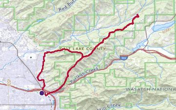
Parley's Ridge16.2 mi, 6,365 ft
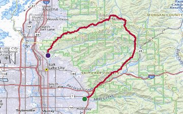
Foothill Ultimate Ridge Linkup (FURL)30.2 mi, 11,613 ft
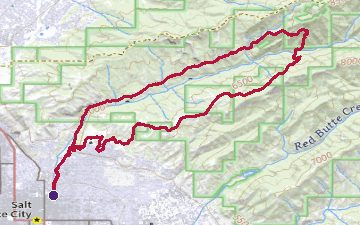
Wasatch Steeplechase Course16.7 mi, 5,594 ft
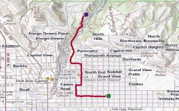
Avenues to City Creek2.0 mi, 344 ft
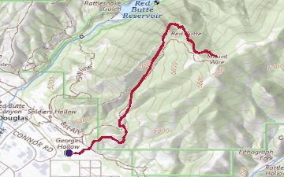
Mount Wire4.0 mi, 2,037 ft
Great Salt Lake
Neff's Canyon & Mount Olympus
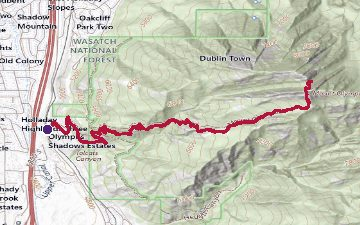
Mount Olympus6.4 mi, 4,052 ft
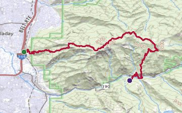
Wildcat Ridge Traverse12.2 mi, 7,212 ft
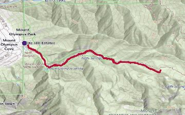
Neff's Canyon Descent5.1 mi, 2,347 ft
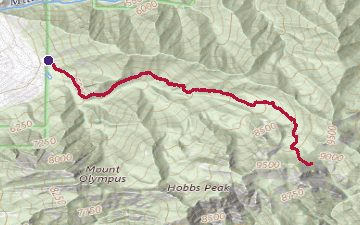
Neff's Canyon to Ridgeline7.9 mi, 3,562 ft
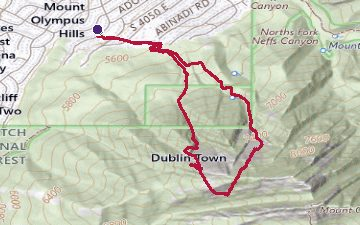
Mount Olympus — West Slabs (attempt)3.2 mi, 3,129 ft
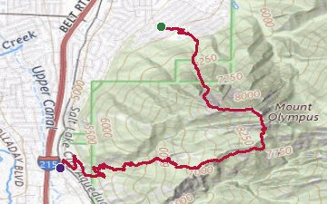
Mount Olympus — West Slabs (full route)5.3 mi, 4,394 ft
Mill Creek Canyon
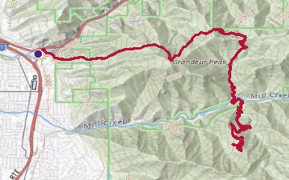
Grandeur Peak via Mill Creek16.2 mi, 7,379 ft
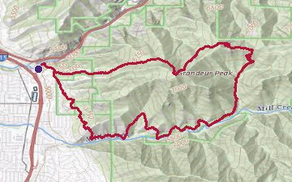
Grandeur Peak Loop9.9 mi, 3,967 ft
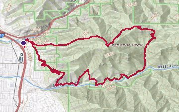
Mill Creek Canyon Loop11.2 mi, 3,398 ft
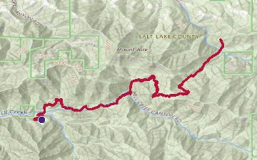
Mill Creek Lamb's Trail Loop13.4 mi, 4,771 ft
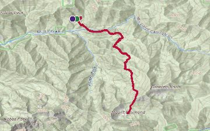
Mill Creek to Gobbler's Knob9.7 mi, 3,724 ft
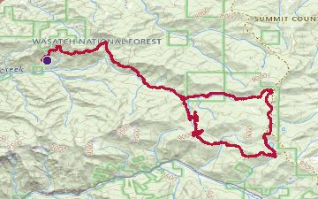
Pipeline–Big Water–Crest Loop24.3 mi, 4,311 ft
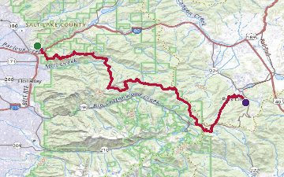
SLC to PC31.2 mi, 7,297 ft
Twin Peaks, Broads Fork & Ferguson Canyon
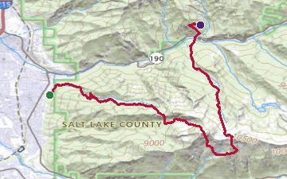
Twin Peaks12.7 mi, 11,135 ft

Broads Fork to Twin Peaks8.3 mi, 5,484 ft
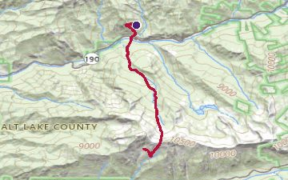
Broads Fork to Twin Peaks (variant)8.3 mi, 5,484 ft
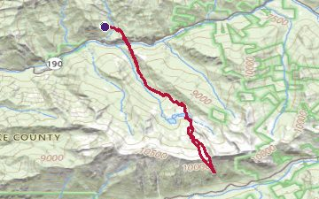
Broads Fork Twin Peaks Loop9.6 mi, 5,220 ft
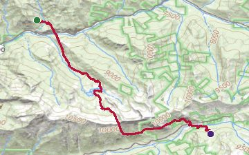
Broads Fork Run8.1 mi, 5,712 ft
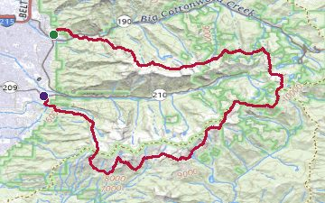
WURL — Wasatch Ultimate Ridge Linkup33.8 mi, 21,607 ft
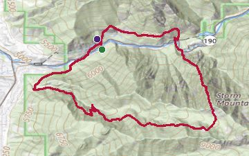
Storm Mountain North Ridge via Ferguson Canyon7.8 mi, 5,086 ft
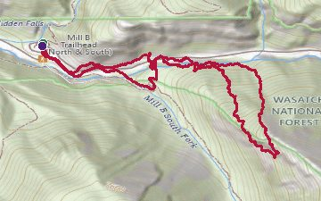
Mineral Slab2.5 mi, 1,522 ft
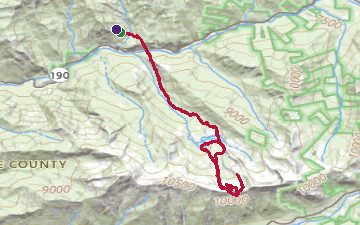
Lake Blanche and Sundial Peak11.2 mi, 5,436 ft
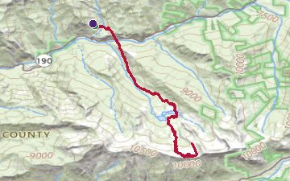
Sundial Peak via Lake Blanche10.4 mi, 4,699 ft
Big Cottonwood Canyon
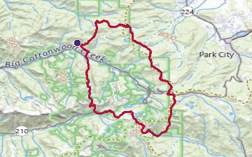
Big Cottonwood Canyon Traverse22.0 mi, 6,289 ft
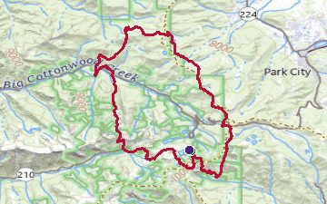
Big Cottonwood Traverse — Alt Route24.3 mi, 6,919 ft
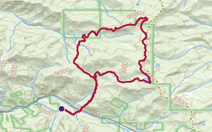
Desolation Lake Loop12.4 mi, 3,963 ft
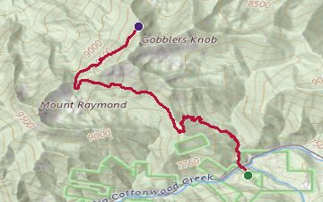
Gobbler's Knob via Butler Fork4.2 mi, 3,182 ft
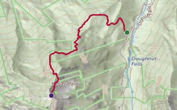
Kessler Peak1.9 mi, 2,607 ft
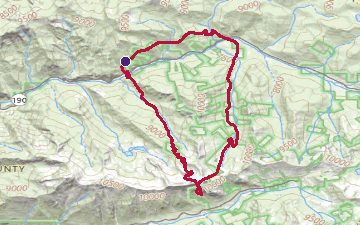
Mineral Fork to Peak 10820 Loop13.1 mi, 5,144 ft
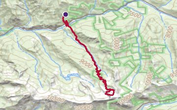
Mineral Fork to 1082010.5 mi, 4,390 ft
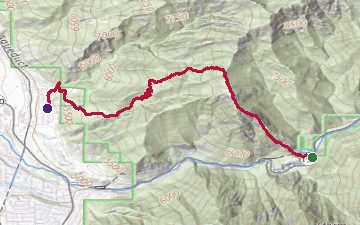
Mule Hollow Ridge4.6 mi, 8,871 ft
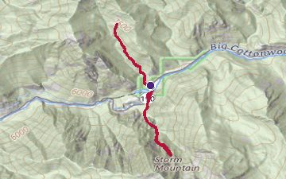
Stairs Gulch and Mule Hollow Loop4.4 mi, 2,295 ft
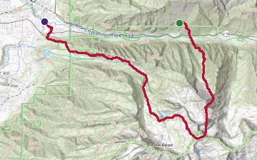
Coalpit Gulch to North Thunder Mountain9.0 mi, 6,393 ft
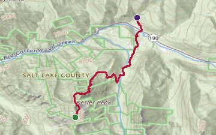
Kessler Peak — Descent to Car3.4 mi, 127 ft
Little Cottonwood Canyon, Alta & Brighton
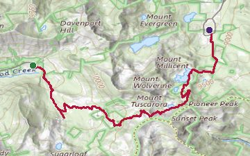
Alta to Brighton5.5 mi, 1,825 ft
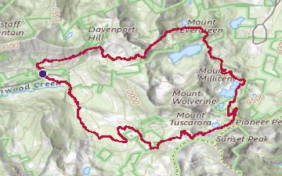
Alta–Brighton Ridgeline Loop8.2 mi
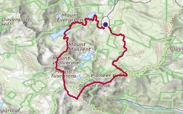
Brighton Cirque6.2 mi, 2,972 ft
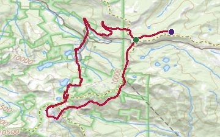
Brighton Cirque (extended loop)12.9 mi, 3,686 ft
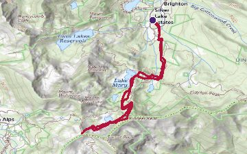
Catherine's Pass4.5 mi, 1,812 ft
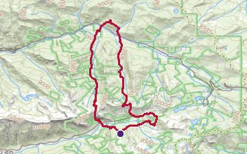
Cardiff Fork Loop from Alta12.7 mi, 5,169 ft
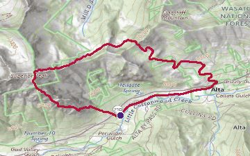
South Ridge of Superior4.5 mi, 2,816 ft
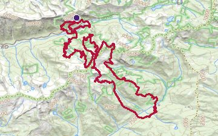
Speedgoat 50K Course32.6 mi, 11,391 ft
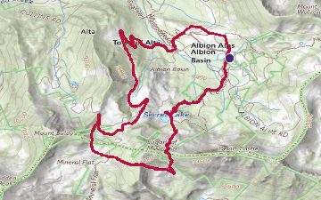
Sugarloaf Peak and Cecret Lake5.3 mi, 2,186 ft
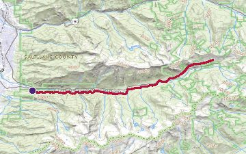
Little Cottonwood Canyon Direct Ascent16.8 mi, 3,336 ft
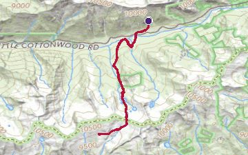
Pfeifferhorn9.6 mi, 4,357 ft
White Baldy11.0 mi, 4,479 ft
Twin Peaks via Lisa Falls7.7 mi, 5,038 ft
The Pawn Approach2.4 mi, 2,324 ft
Lone Peak & American Fork Canyon
Lone Peak11.4 mi, 6,190 ft
Lone Peak via Jacob's Ladder15.6 mi, 6,593 ft
Box Elder Peak12.1 mi, 4,714 ft
Elder and Silver Peak Loop15.0 mi, 6,703 ft

Silver Lake15.7 mi, 6,361 ft
Silver Lake (alternate)15.7 mi, 6,361 ft
Tibble Fork Loop22.3 mi, 4,190 ft
American Fork Canyon Run11.6 mi, 5,468 ft
Central Wasatch Cross-Canyon Ramble28.2 mi, 12,635 ft
South Wasatch Foothills Loop10.9 mi, 4,905 ft
Timpanogos & Utah Valley
Timpanogos Traverse13.8 mi, 6,690 ft
Timpanogos13.8 mi, 5,693 ft
Timpanogos Alternate Route9.0 mi, 6,427 ft
Rock Canyon Access Trail (Provo)31.7 mi, 8,810 ft
Park City & Wasatch Back
Park City Skyline Trail Traverse26.2 mi, 8,010 ft
Bob's Trail to Park City Skyline8.8 mi, 2,183 ft
Park City to Gobbler's Knob27.7 mi, 7,018 ft
Quarry Mountain2.2 mi, 988 ft
Rail Trail22.3 mi, 207 ft
Silver Creek Loop8.7 mi, 1,258 ft
Guardsman Pass to Sunset Peak14.6 mi, 6,745 ft
Guardsman Pass and Blood's Lake9.3 mi, 2,625 ft
Wasatch Crest to Uintas Crossing186.5 mi, 15,987 ft
Promontory Trail21.1 mi, 5,282 ft
Wasatch Back Loop7.0 mi, 1,475 ft
Rockport: Beach to "The Blob"4.8 mi, 1,226 ft
Park City to Snowbird Traverse27.7 mi, 5,810 ft
Uintas
Kings Peak via Henry's Fork27.1 mi
King's Peak (followed Krupicka track)24.1 mi, 4,728 ft
Island Lake7.6 mi, 1,211 ft
Wasatch Front — Backcountry Skiing
Mount Raymond via Porter Fork10.0 mi, 5,033 ft
Flagstaff Mountain — West Bowl Exit3.9 mi, 2,888 ft
The Cone (Hayden Peak) — Brighton-Mill Creek Divide4.2 mi, 1,827 ft
Heart of Darkness → Cardiac Chute → Cardiff Pass8.1 mi, 6,760 ft
Cardiac Ridge0.9 mi, 957 ft
Suicide Chute, Mt. Superior1.7 mi, 1,727 ft
Bonkers Couloir (splitboard)7.5 mi, 4,528 ft
Pfeifferhorn (ski descent)10.0 mi, 4,845 ft
Pfeifferhorn Time Trial (ski)9.1 mi, 4,146 ft
Alta Toward Mount Greeley11.3 mi, 5,497 ft
Alta Toward Sugarloaf11.3 mi, 5,456 ft
Laps on Peak 10,4205.5 mi, 2,533 ft
Park City to Brighton (Easter tour)7.0 mi, 2,785 ft
Park City to Brighton (February tour)14.1 mi, 4,027 ft
Timpanogos — Cascade Cirque via Dry Canyon13.2 mi, 10,089 ft
Sierra Nevada — Running
John Muir Trail207.2 mi
Trans-Yosemite Route74.4 mi, 0 ft
Crowley Lake Trail Run44.4 mi, 8,898 ft
Evolution Traverse29.4 mi, 17,413 ft
Evolution Traverse (Aug 2025)29.7 mi, 23,060 ft
Mount Whitney from Lone Pine (followed Kuenzle track)43.1 mi, 11,667 ft
Cactus to Clouds19.7 mi, 13,438 ft
Cactus to Clouds (followed David Hedges track)28.4 mi, 12,008 ft
Cottonwood–Marble Canyon31.6 mi, 4,765 ft
Pratt to Nordhoff Lookout18.4 mi, 4,645 ft
Sierra Nevada — Skiing
Red Rock, Nevada
Rainbow Triple Peak Loop8.4 mi, 3,642 ft
Rainbow Cirque7.5 mi, 4,688 ft
Calico Traverse7.5 mi, 4,412 ft
Ice Box Pinnacle6.7 mi, 3,635 ft
Mount Wilson8.8 mi, 3,858 ft
Big Mac's 6 Peak Cirque24.6 mi, 11,577 ft
Gunsight Notch Peak Loop12.2 mi, 8,501 ft
Black Velvet Peak — Epinephrine Descent1.7 mi, 409 ft
Zion, Utah
Zion Traverse48.6 mi, 12,735 ft
Trans-Zion (short)37.0 mi, 9,425 ft
West Rim15.1 mi, 3,868 ft
Lady Mountain3.8 mi, 2,835 ft
Escalante & Capitol Reef, Utah
Death Hollow Loop & Mamie Creek Natural Bridge21.7 mi
Death Hollow via Boulder Mail Trail14.7 mi
Muley Arch Loop via Upper Muley Twist Canyon9.2 mi
Navajo Knobs4.5 mi
Sedona, Arizona
Cocodona 250 (2024)248.4 mi, 39,990 ft
Three Passes20.3 mi, 4,125 ft
Casner Canyon Loop12.1 mi, 2,378 ft
Casner Canyon — Out With a Bang8.4 mi, 2,446 ft
Grand Teton, Wyoming
Teton Crest Trail (7:27)39.6 mi, 9,445 ft
Paintbrush Divide19.1 mi, 4,422 ft
The Grand Teton — "Skill Issue" (followed Kuenzle track)14.3 mi, 7,165 ft
Cascades — Ski Descents
Mount Rainier — Earth, Wind & Fire (followed Kuenzle track)13.3 mi, 9,023 ft
Mount Shasta — Rime and Punishment (followed Kuenzle track)10.4 mi, 8,843 ft
Mount Hood — Intergalactic Skimo (followed Kuenzle track)6.7 mi, 5,394 ft
Big Bend, Texas
Boulder, Colorado
Texas Hill Country
.jpg)